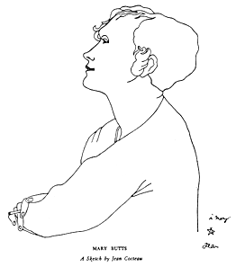

alerts
"L'ECRITURE COURANTE OF MARGUERITE DURAS, by Chris Tysh
So what do we touch, again and again, in the smooth dwelling of this brilliance? It is a book made like music, "measure by measure, beat by beat. "1
Through the mute mouth of a subject come words cradled around a ferry, white girl in Hanoi, the Chinaman's softness, also money, brothers, a resonance like the lightning drop of a dress, a falling fear. Do you remember in
Hiroshima:
"You destroy me. You're so good for me."? A desert begins. Illicit walls when one is so near crime, language collides, trembles at the edge of being revoked. It makes a sentence, in high heels invading the water, shrinking from history, the kind pressed into women's arms, strapped to repeat old reigns: "she wanted to." Collapsing the habitual boundaries of literary genre, L'Amant
exists as
ergasterion,
2 privileged space of a textual body withdrawn from the sharp mirrors of nostalgia. Shockingly, Duras enters it as if a stranger in her own building, keys and door, preposterous liberties. Unable to learn the duties of owner/author, she moves "her head full of holes"3
giving the work a slight impression of anorexia, momentary hesitation allowing the world to recede while the writing rushes on, stunning.
Her only obsession lies with the shouting body of the text, traversed here and there by luminous spasms we read as limit of speech. It would have to be an infraction, desire as regime, not a narrative frame but open campaign against absence, a girl under duress, her mother's life, a woman's silence.
What seduces the reader beyond reason is the erotic power of language, between writing and speaking, a libidinal zone where meaning is released, fluttering, a shiver before the rain. Aurelia Steiner, Lol V. Stein, Anne-Marie Stretter, Duras's heroines, green eyes, smell of caramel, white shoulders, golden shoes enter my body, lips, I kiss the verb after their passage, deformed by so much beauty. I never get over this ineffable, delirious face of "jouissance."
To understand Duras's production of desire is to realize woman's positioning in the language system and the distance traveled from object to subject. That the desiring agent at work in
L'Amant
reflects this shift without ever losing its memory of "muteness and exclusion,''4
i.e., its "otherness" or without embracing the specters of patriarchal authority must be seen as the inauguration of a discourse which is both struggle and freedom.
The book we behold is the running surface of this new textual practice: "writing that doesn't show, which runs on the crest of words, writing which doesn't insist, which has barely the time to exist, which never cuts the reader, never takes his place. No proposed version. No explanation."5
The English translation of
L'Amant
will be published by Pantheon, summer 1985.
(1) Marguerite Duras, interview published by
Le Nouvel Observateur,
9/28/84, Paris (trans. C. Tysh)
(2) Julia Kristeva, "Motherhood according to Bellini" in
Desire in Language,
Columbia Univ. Press, 1980.
(3) Marguerite Duras,
The Places of Marguerite Duras,
interview by Michele Porte, published in
Enclitic,
Fall 83, translated by Edith Cohen.
(4)
Johanna Drucker,
Women & Language, published in
Poetics Journal
no.4, May 1984.
(5)
Marguerite Duras, interview published by
Le Nouvel Observateur.

PICUS MARTIUS
A woman is often the major, though not the dominant figure in the increasingly communal story her characters' lives unfold; as female protagonist, she sets in motion the divine powers, rather than controlling the action. She is unconventional, defined neither by prescribed female roles
or
career/cause. She is a life-bearer, an artist of love such as Shelley describes Keats, shaping more permanent, expansive relationships and a more inclusive community than the world will admit. While not saintly in the usual sense, this "life-bearer" resists the ill-will, envy and rivalry threatening to become a new morality and generates an atmosphere of sympathy where a crossing-over can occur, the Eternal reach into time where things happen differently than in the ordinary chain of events. "Rings Hill," Butts writes, "is a place of evocation. Where the word is made flesh. That's too poetical. I mean a place where the shapes we make with our imagination find a body."
WORKS BY MARY BUTTS:
go to this issue's table of contents


Here lies the Woodpecker, who was Zeus
Thoughts of the Bird-Catcher,
Who caught the Woodpecker,
Once Zeus.
Remember:
Birds in stone, birds in clay, birds on coins,
The unsubstantial feathers made substantial
In Caria and Istria and Umbria,
In memory of the Woodpecker who was Zeus.
Because God had been a bird.
God like a bird,
'The same moon in Cameroon'
In dancing-places and sleeping places and bars,
Dressed-up like a man,
A too-bright creature perched a moment on
 your wrist.
your wrist.
Birds are born again,
The unsubstantial feathers made more airy
In flesh.
Recognise a bird in a man
That it is feathers, air
Not flesh.
Catch it if you can,
Tie a thread to the transparent claw
And in the sensibility of honour
Untwist.
Sigismundo de Malatesta da Rimini
Was a master in this.
Because his name was magnificence:
Because of his pride,
Because of Madame Isotta,
Because he has nothing whatever to do with this.
Advice of the bird-catcher:
Consider;
The trouble brought by bird-lovers
On the lovers of birds
(Leda and Ganymede
Spring to the mind).
A bird-priestess wore the feathers of a king-fisher
In Elis of all places,
Next door to the palace of the Imperial patriarch
 Zeus-Pater,
Zeus-Pater,
No earthly sense in it but art.
Advice to Leda:
Ruffle your feathers out of the wood,
You cannot stay in with the bird-king.
Make your nest where you can
Lay phoenix eggs,
Turn the substantial shell to unsubstantial
Fire birds.
Meet the king who is neither a bird nor a man
In the easiest place,
Mother of the Dioscuri,
Apprentice--bird-catcher the bird picked up
To dance with and shoot craps and
 whistle out the night.
whistle out the night.
There is a feather-leash
From wrist to wrist,
A running-knot to tie
Those who have kissed
(Not poetry this
Pastiche on a past air.)
Il ne vient pas ce soir
(Make a tune of this)
Absent--le bien venu
Absent--le menu plaisir
De ce soir
Disparu.
Light tears of the Bird-catcher,
Who caught the Woodpecker, Picus Martius
Once Zeus.
You were an airy unsubstantial love,
But you were peace,
Peace for the Bird-catcher and his little friends
Famous in story.
Told:
Where the rocks are made of glass
And the sea of blue stone,
Where the trees are dry and grey
For bird-flash and dance,
Where the fir-cone,
Ivy, briony
Trouble memory, the mother of the Muses,
The nine names of the imagination,
With a bird's feathers brushed in the moment
 of flight.
of flight.
He said:
Steady Ganymede!
Careful Leda!
That bird was a god,
Was a man.
Zeus-Swan, Zeus-Eagle, Woodpecker-Zeus:
Old memories of the bird-catcher
Of the lovers of a bird,
And of Picus Martius
God--like--a--bird
Zeus.
--Mary Butts
(originally appeared in
Hound & Horn,
vol. 3, no. 2, October 1929 )
SHORT STORIES:
Speed the Plough
Several Occasions
Last Stories (1938)
NOVELS:
Armed with Madness
Ashe of Rings
Death of Felicity Taverner
HISTORICAL:
The Macedonian
Scenes from the Life of Cleopatra
PAMPHLETS:
Warning to Hikers
Traps for Unbelievers
Imaginary Letters